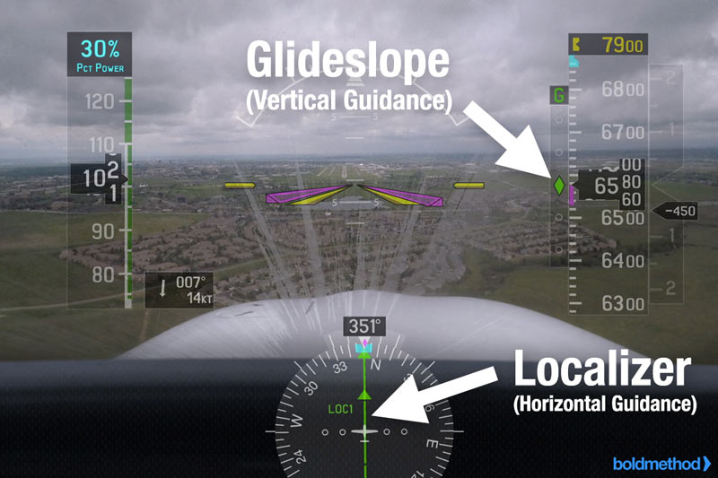

Transport
Korean Air Flight 801
The Korean air flight 801 was a scheduled international passenger flight operated by Korean Air and it crashed on August 6, 1997. The disaster killed 228 people of the 254 on board.

The investigations about this fact are made by the NTSB (National Transportation Safety Board), and they found different causes:
MSAW
(Minimum Safe Altitude Warning). This software is an automated warning system for air traffic controllers, that produces an alert when the airplane is in proximity to terrain or obstacles. The MSAW system at Antonio B. Won Pat International Airport, Guam (the destination of the Korean Air Flight 801) had been modified because there were too many false alarms, but in this way it couldn’t detect an approaching aircraft that was below minimum safe altitude.
Glide scope of ILS
(Instrument Landing System). This software enables a pilot to land an airplane by instrument approach when the pilot cannot see the runway. The pilot must controls the aircraft so that the glide slope indicator remain centred on the display to ensure the aircraft is following the glide path of approximately 3° above horizontal (ground level) to remain above obstructions and reach the runway at the proper touchdown point. This system would have been fundamental because there was heavy rain and the visibility was reduced, but it was out of service.
After this incident, all Korean Air services to Guam were suspended for more than four years. In 2000, a lawsuit was settled in the amount of 70 million dollars on behalf of 54 families against the airline.